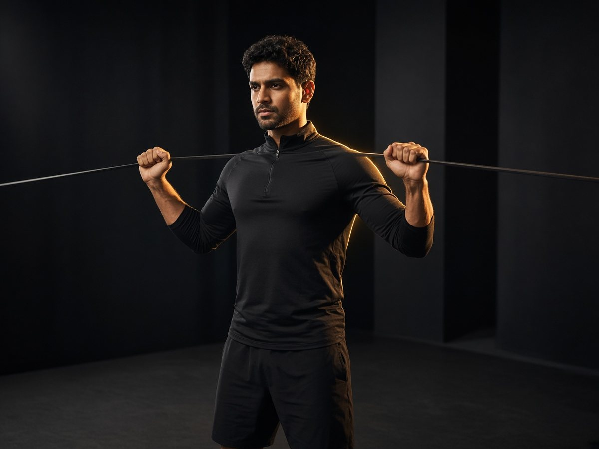

Targeted strength & mobility
Built for laptop necks, stiff lower backs, low muscle, and weekend joints — not random burnout circuits.

మన ఆరోగ్యం
AROGYM is a live coaching platform for US Telugu professionals, moms, and families. We help you get strong, move with less stiffness, and keep the food you already love — from your living room.
Try a free class — Sat Dec 19 (10 AM ET · 9 AM CT · 8 AM MT · 7 AM PT)
Our vision
AROGYM exists so Telugu professionals and families can undo what long desk days do to the body — stiff necks, aching backs, a growing middle, tired evenings — with targeted strength and mobility, coached live and built around your body, fuelled by the same home food your family already eats.
Built for laptop necks, stiff lower backs, low muscle, and weekend joints — not random burnout circuits.
Live in Telugu and English at 8 PM ET, adapted to your schedule, starting point, and cranky spots.
Veg, non-veg, or vegan: food habits built around your family’s own cooking, for the long run.
See what long desk days do · Why coached · Take the 60-sec fit check

Desk job body
Office lo 9 hours kurchunnava? Head toward the screen, shoulders rounding, hips locked, lower back stiff by 6 PM — plus wrist and forearm strain from long laptop days. Targeted strength changes what stretching alone can’t.
Coaching for non-specific stiffness and desk posture — not a diagnosis or physical therapy. Nerve symptoms (numbness, radiating pain) or sharp pain need a clinician first.
Talk through your desk week
Weekend games & achy joints
Saturday badminton, cricket, pickleball, a run, or a hurried gym session on top of a stiff work week is how knees, shoulders, ankles, elbows, and wrists get overloaded.
If pain is sharp, swollen, unstable, or lingering, see a clinician first. AROGYM coaches movement prep and a safe return to training after medical clearance — not physical therapy.
Book a free consultWho it’s for
Normal weight on the scale with a growing waist, and a 3 PM crash fuelled by chai — a familiar desk-day pair. AROGYM pairs live strength at 8 PM ET with practical daily habits, as fitness coaching, not a clinic.
Belly fat, low muscle & blood-sugar risk
In MASALA and MESA research, US South Asians had more insulin resistance and less lean muscle than other groups even at the same BMI. That is why ADA and USPSTF recommend considering diabetes screening for Asian Americans at BMI ≥ 23 — a screening guideline, not a target.
Fitness coaching only — AROGYM does not treat or prevent diabetes. If you manage diabetes or take medication, train with your doctor’s OK.
Energy & evening recovery
Dead after lunch, running on evening chai, then wired after late IST calls. Afternoon fog and restless sleep are a desk-day pattern, not a willpower flaw.
General fitness benefits — not a treatment for sleep disorders or medical fatigue.
Community context: India’s ICMR-INDIAB-17 survey estimated abdominal obesity in 39.5% of adults (95% CI 37.7–41.4) and diabetes in 11.4% (95% CI 10.2–12.5).
Good fit
Not for you
Plainly put: AROGYM is coach-guided strength, mobility, and everyday food habits — never a fixed meal chart, physical therapy, or medical advice.
Why coached
YouTube gives you workouts. Async apps send PDFs. AROGYM gives you a live US-evening plan for your body, a coach who watches on camera, and a room that expects you.
| What matters | Free YouTube / saved videos | Async apps & India-hours coaches | AROGYM live cohort |
|---|---|---|---|
| Class timing | Whenever you remember | Pre-recorded or India hours only | Live US weeknights: 8 PM ET · 7 PM CT · 6 PM MT · 5 PM PT (+ recordings) |
| Starting point | Generic — assumes you’re pain-free | Intake form + static template | Free 30-min consult + health form mapped to your desk week and body |
| Form & safety | You and a mirror; push through or quit | Delayed text or clip feedback hours later | Real-time camera-on form cues and live regressions on Zoom |
| Desk & weekend sport | Random burnout videos | Generic weight-loss splits | Progressive strength & mobility built for laptop posture and weekend games |
| Food | One-size “eat clean” advice | Fixed meal PDFs or strict macro charts | Preference-first (veg, non-veg, vegan) around home cooking — zero meal PDFs |
| Language & culture | Generic | Rarely built for US Telugu weeknights | Telugu + English, built around US workdays, IST calls, and family life |
| Entry & cost | $0, paid in skipped weeks | Often $100–$200+/mo or 12-week lock-ins | Free consult + free Dec 19 taster + $49 early bird ($79 std) for 30 days |
In a 2025 randomized trial, adults completed 88% of supervised resistance sessions versus 52% on a self-guided PDF plan (Gavanda et al., 2025). AROGYM is live online group coaching — not an in-person 1:1 personal trainer — built to give you real eyes on your form, clear progression, and a US-evening room that expects you.
How it works
The free consult is step one — a chance to meet the team and see if the challenge is a fit. We only enroll, then complete forms, then send Zoom, in that order. Chala important we keep you safe, not sorry.
A video call about your goals, your desk or sport history, and whether the 30-day challenge is the right next step. It’s a request — Anish will confirm your slot within 24 hours.
Book a free consultIf it’s a fit, pick a plan and pay through Stripe. Early bird is $49 through December 24, 2026, then $79.
See plansFill a short PAR-Q health form and a waiver. Required before you join a live class.
Health form (PAR-Q) · WaiverOnce the forms are in, you’ll receive the Zoom link and a short note — what to set up, when to arrive, how to say hello. Community reminders will come by WhatsApp and/or email.
WhatsApp / Zoom details coming after you enroll.
మన ఇంటి భోజనం
Vegetarian, non-vegetarian, or vegan, AROGYM builds your food habits around what your family already cooks and the traditions you keep. No separate “diet food,” no foreign meal plan. Your coach starts from your kitchen and your week, then shapes the habits with you.
In randomized trials, programs that paired food habits with exercise beat exercise alone (Johns et al., 2014), and in a head-to-head diet trial, sticking with the plan mattered more than which diet it was (Dansinger et al., 2005).
Coach-guided everyday food habits, not a medical diet. If you manage diabetes, kidney disease, allergies, pregnancy, or another condition, follow your doctor or dietitian.
Preference 01
Built entirely around your vegetarian home cooking, including eggetarian if that’s you.
Preference 02
Built around how your family cooks and eats, every day and on weekends.
Preference 03
Fully plant-based, built around your traditions, with no dairy assumed.
Veg on certain days? Fasting or festival weeks? A mixed-preference household? Tell us at the consult, and we plan around it, not against it.
Tell us your preference, your traditions, and how your week really runs.
Your coach shapes simple habits around the food you already make, for you and your family.
As training, travel, festivals, or late calls change, your food habits adjust with you.
Coaching team
A live coaching platform, with Anish as founding coach — and more Telugu-speaking coaches and dieticians joining as the pilot grows.

Founding Coach
Live from Hyderabad. Eleven years of coaching. He focuses on mobility and helping busy professionals get lean and strong, with less pain, in Telugu and English. His coaching also includes strength and conditioning, fat loss, functional training, and work with beginners, moms, and people at a desk all day.
Expanding team
AROGYM is building a coaching team. Additional Telugu-speaking coaches and dieticians will join as the pilot grows. That is the plan — it does not mean those roles are already filled.
Want to meet the team first? The free 30-min consult is the best place to start.
Book a free consult60-second check
Five quick taps to see your exact local class time, how AROGYM fits your kitchen and desk week, and the best first step — zero dish menus, zero sign-up needed.
JavaScript is needed for the interactive fit check. Jump straight to the free 30-min consult or free Dec 19 taster.
Free 1:1
The free 30-minute video call is the best first step — a real conversation, not a sales pitch. Slots convert automatically to your local US time zone (ET · CT · MT · PT), and live classes run weeknights at 8 PM ET · 7 PM CT · 6 PM MT · 5 PM PT.
What we map in your 30-min consult
Your workday hours, laptop stiffness, and weekend badminton, cricket, or pickleball schedule.
Vegetarian, non-vegetarian, or vegan — everyday habits around what your family already cooks, with no separate meals.
Simple phone or laptop placement so your coach can watch your form live on Zoom.
Clear guidance on whether the 30-day cohort fits your schedule — no hard sell.
The time picker needs JavaScript. Email Anish to request a free 30-minute video consult, and include your US time zone (ET/CT/MT/PT), food preference (veg/non-veg/vegan), and a few times that work for you (Monday–Saturday).
Schedule
One live Zoom class, Monday through Friday, for 30 days — 8 PM ET · 7 PM CT · 6 PM MT · 5 PM PT.
| When | What |
|---|---|
| Monday–Friday 8 PM ET · 7 PM CT · 6 PM MT · 5 PM PT |
Live Zoom class with the AROGYM coaching team, from Hyderabad |
| Saturday–Sunday | No live class — use recordings if you need a catch-up |
| Monday, January 4, 2027 | Challenge starts (runs through Tuesday, February 2, 2027) |
| Saturday, December 19, 2026 10 AM ET · 9 AM CT · 8 AM MT · 7 AM PT |
Free live Zoom taster — spouses & friends welcome |
The 30-day challenge
Enrollment is open December 14, 2026 – January 2, 2027. Early bird is $49 through December 24, 2026, then $79.
Transparent value
$49 early bird (ends Dec 24) covers ~20 live weekday Zoom classes plus recordings — compared with $100–$200+/month for async apps or 12-week lock-ins with no US-evening live coaching — backed by a 3-day refund guarantee.
Makar Sankranti · Thu, Jan 14
Start Jan 4, celebrate Makar Sankranti (Thu, Jan 14) with your family without guilt, and finish strong Feb 2.
Early bird — through December 24, 2026
$49
The 30-day live challenge (~20 live weekday classes + recordings). For enrollments through December 24, 2026.
Enroll at $49 Or book a free consult firstStandard
$79
Same 30-day live challenge and recordings, after early bird ends, through January 2, 2027.
Enroll at $79 Or book a free consult firstPrices are in USD. Refunds are available within the first 3 days after enrollment. Payments will be processed by Stripe. Training with your spouse or a family member? Ask about spouse/household options on your free consult — household pricing is not finalized yet.
Try before you enroll
Curious, or want to try it with your spouse or a friend? Roll out two mats in one living room — meet mana people, move a little, and see if the time fits your week. No hard pitch, just a real class taste.
Saturday, December 19, 2026
10 AM ET · 9 AM CT · 8 AM MT · 7 AM PT
Zoom link after you register. Telugu and English. Two mats in one living room welcome. Free.
Register for the free tasterFAQ
The consult is a free 30-minute video call — the best first step. You pick a time below; that sends a request, not a locked booking. Anish will confirm your slot within 24 hours by email or WhatsApp. It does not enroll you. The 30-day challenge is the paid live series starting Monday, January 4, 2027, weekdays at 8 PM ET. You enroll separately between December 14, 2026 and January 2, 2027.
No. AROGYM offers fitness coaching: live mobility and strength, movement preparation, and coach-guided food habits for everyday Telugu meals. We do not diagnose, treat, or rehab injuries, diabetes, or posture conditions, and we do not provide physical therapy or a medical diet. If pain is sharp, swollen, unstable, or lingering, or you have a health condition, check with a clinician first.
Yes — weekday live classes run at 8 PM ET · 7 PM CT · 6 PM MT · 5 PM PT, Monday through Friday (plus recordings if a work call runs late). The free taster on Saturday, December 19, 2026 runs at 10 AM ET · 9 AM CT · 8 AM MT · 7 AM PT.
Yes. Classes are recorded, so you can catch up if you miss a live evening.
Yes. This is built for people starting from a busy life, not from a gym habit. Coaches will offer regressions where they can, and you go at a pace that feels safe. Show up, that’s the win. If you have a health condition, complete the PAR-Q and check with your doctor first.
No gym membership and no fancy gear. A little floor space at home is the main requirement. A yoga mat is helpful if you have one.
Telugu and English. Tenglish is welcome. If you only have one of the two, you can still follow along — cues stay clear.
No. Whether you’re vegetarian, non-vegetarian, or vegan, we build food habits around your own home cooking and traditions. No detox, no foreign meal plan, no separate cooking for you. This is coach-guided food habits, not a medical diet or a calorie target.
Yes. We plan around the household you actually have. Share it at the consult.
Refunds are available within the first 3 days after enrollment.
This is not medical care, and we can’t tell you it’s safe for every body. Complete the health form (PAR-Q) and waiver after you enroll, and check with your doctor if you are pregnant, postpartum, managing an injury or condition, or unsure. If the form flags a concern, pause and talk to a professional before you join a live class.
1) You get a payment confirmation. 2) You fill the health form (PAR-Q) and waiver — required. 3) We send the Zoom link and a short onboarding note. 4) You join the community channel once it’s ready. 5) Optional: come to the free taster on Saturday, December 19, 2026 at 10 AM ET if you enroll before that date. 6) Live classes start Monday, January 4, 2027, at 8 PM ET.
No. Saturday, December 19, 2026 at 10 AM ET is a free visit so you can feel the class. The paid challenge is the 30-day series starting Monday, January 4, 2027. You enroll separately between December 14, 2026 and January 2, 2027.
AROGYM is live coaching for US Telugu families — mana community, on Zoom, weeknights at 8 PM ET · 7 PM CT · 6 PM MT · 5 PM PT. The free consult is the best first step.
AROGYM is a coaching platform. The free consult, the 30-day challenge, movement preparation, and coach-guided food habits are general fitness coaching — not medical advice, diagnosis, treatment, physical therapy, or a medical diet. Nothing on this page is a promise of a specific result — no guaranteed weight change, no “transformation” in the miracle sense, no cure or detox claim. AROGYM does not treat, cure, or rehab injuries, diabetes, or posture conditions.
If pain is sharp, swollen, unstable, or lingering, or you have a health condition, get medical clearance first. By enrolling, you will be asked to complete a health screening (PAR-Q) and a waiver before you receive the live Zoom link. If you are pregnant, postpartum, injured, managing a medical condition, or you haven’t been active in a long time, please check with your doctor before you start. If you feel pain, dizziness, or anything that feels wrong in a consult or class, stop and get help if you need it.